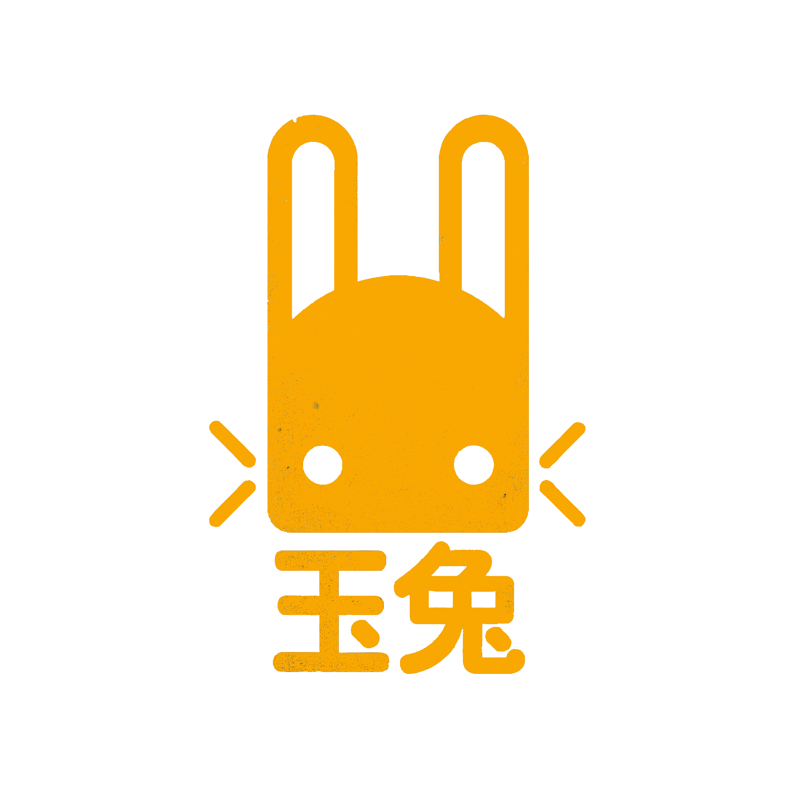
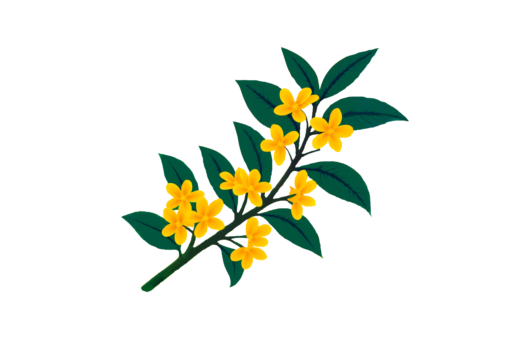

For thousands of years, people have lifted their eyes to the night sky and seen in the glow of the full moon the outline of a rabbit. In the legends, Yùtù is not a warrior or a conqueror, but a quiet companion, endlessly pounding the elixir of immortality in his mortar. His story is not about triumph or conquest, but about patience, rhythm, and continuity.
Each strike of the pestle is a breath of eternity. Yùtù reminds us that permanence is not born from sudden force, but from repetition - from countless small acts that, together, create something that endures. He is the emblem of devotion to a task that never ends, and of the strength that reveals itself in constancy.

The Moon and the Rabbit
In Chinese tradition, Yùtù is the eternal companion of Chang'e, the Moon Goddess. He shares her solitude, but transforms it into ritual - a labor that gives meaning to time itself. His image lives in poetry, in paintings, in lanterns that glow during the Mid‑Autumn Festival.
Even in the modern age, his presence endures. When China sent its first lunar rover to explore the surface of the Moon, it was named in his honor: Yutu. A myth became part of science, a story became part of technology. Yùtù is not only legend; he is cultural memory, a bridge between past and future, myth and machine, dream and reality.
The Philosophy of Rhythm
Yùtù is the figure of a labor that never concludes. Yet in this endlessness lies his power. He does not seek an ending; he creates eternity through repetition. His philosophy is that value is not found in a single result, but in the rhythm that sustains life.
So it is with human culture: festivals return each year, the moon rises each night, generations follow one another. Everything changes, yet the rhythm remains. Yùtù is the symbol of that rhythm, of continuity stronger than time itself.
From Legend to Chain
Today, myths find new vessels. The moon is no longer only a symbol of longing; it has become the dream of ascent, the meme of "to the moon."
On BNB Chain, Yùtù takes new form. Each block is a strike of the pestle, each transaction a rhythm that sustains the network. What was once a figure in the heavens becomes a living symbol on‑chain.
$YUTU is not about immortality. It is about continuity. About a community that creates rhythm together, turning individual actions into an eternal pattern.
Osmanthus and Renewal

In the legends, beside Yùtù grows the osmanthus tree (桂花). Its blossoms return again and again, filling the air with fragrance. It is another symbol of cycles: blooming, fading, blooming again.
On the blockchain, this is reflected in the growth of the network: new participants arrive, old ones depart, but the pattern continues. Each flowering is a new wave, each wave part of the greater rhythm.
Conclusion
$YUTU is a memetic idea, tokenized and carried onto the blockchain. It is not a protocol or a product, but a living symbol, a vessel borne by its holders. Its value lies not in utility, but in the philosophy it represents, and in the collective experiment of seeing whether an ancient legend can be reborn in digital form.
Yùtù (玉兔), the Jade Rabbit, has lived in the imagination of cultures for centuries. Perched upon the Moon, he is not a conqueror, not a hero of battles, but a quiet figure of endurance. His story is not about victory, but about rhythm — the endless pounding of the pestle into the mortar, the steady beat that echoes through eternity.
In this myth, there is no final act. The Rabbit does not seek completion, nor does he chase perfection. His gift is constancy. Each strike of the pestle is a reminder that meaning is not found in sudden brilliance, but in the patterns that endure. The ordinary act, repeated without end, becomes extraordinary. The cycle itself is the treasure.
The meaning of Yùtù is not hidden in triumph, but in persistence. He teaches that beauty is not the absence of cracks or flaws, but the presence of continuity. The Rabbit's lesson is that immortality is not a single moment of glory, but the weaving of countless small moments into a rhythm that never breaks.
This myth is more than a story of the Moon. It is a mirror for life, for culture, for creation. It reminds us that strength is not always loud, that resilience is not always dramatic. Sometimes it is the quiet, patient act — repeated again and again — that shapes eternity. To follow the spirit of Yùtù is to embrace the rhythm, to see in repetition not monotony, but the pulse of immortality itself.
$YUTU will be launched via four.meme on Binance Smart Chain.
The Cycle
YUTU is not a product, not a protocol, not a utility coin. It is a cycle — a living experiment in patience, persistence, and coordination. Just as the Jade Rabbit's pounding continues only if he chooses to lift the pestle again, the rhythm of this project continues only if the community chooses to sustain it.
The cycle asks a question that is both ancient and urgent: can a group of people endure repetition, resist the temptation of short‑term gain, and instead embrace the long arc of endurance? Every wallet that holds is a heartbeat in this rhythm. Every participant is both witness and creator, both subject and shaper of the experiment.
This is not a new dilemma. Game theory has long shown that cooperation creates the greatest outcomes, yet markets fracture under impatience. Traders defect, chasing the immediate at the expense of the enduring. YUTU places this tension in public view. It transforms the myth of the Jade Rabbit into a social test: can we, together, keep the rhythm alive?
The pounding never ends. There is no final strike that completes the work. What matters is whether the rhythm binds us together, whether the cycle itself becomes the vessel of value. In that binding, something emerges that is stronger than any single act: a community that endures, a rhythm that cannot be broken, a story that grows rarer and more beautiful with each repetition.
To hold YUTU is to participate in this cycle. To believe in it is to accept that immortality is not a destination, but a process. The experiment is not about reaching an end — it is about proving that continuity itself can be the greatest form of strength.